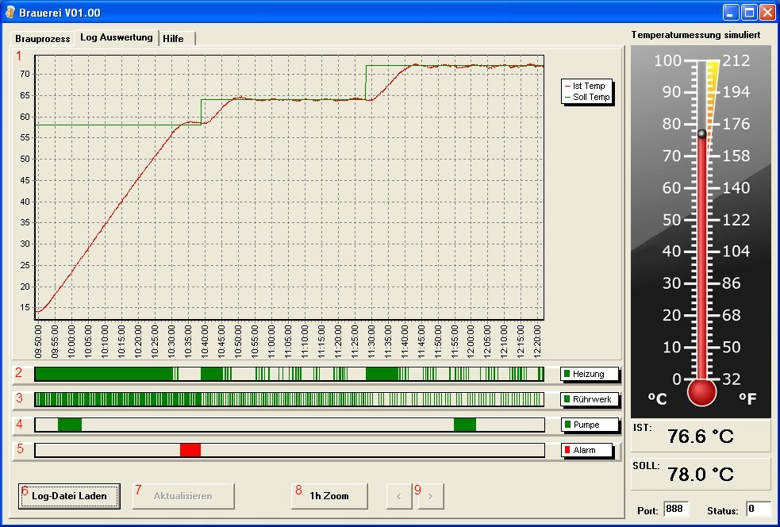
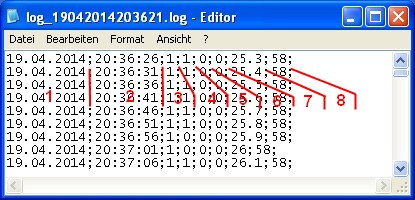

Hilfe Datei zu Brauerei V 1.00 – by Emilio – HOME
Logdatei Auswertung:

Grafische Darstellung des Soll- und Ist-Temperat-Verlaufs des Brauprozesses oder einer geladenen Log-Datei
Grafische Darstellung des Ein-Aus-Status der Heizung während des Brauprozesses oder einer geladenen Log-Datei
Grafische Darstellung des Ein-Aus-Status des Rührwerks während des Brauprozesses oder einer geladenen Log-Datei
Grafische Darstellung des Ein-Aus-Status der Pumpe während des Brauprozesses oder einer geladenen Log-Datei
Grafische Darstellung des Ein-Aus-Status des Alarms während des Brauprozesses oder einer geladenen Log-Datei
Laden von Log-Dateien (Dieser Button steht nicht während eines gestarteten Brauprozesses mit Logging zur Verfügung)
Während des Brauprozesses kann hier die Anzeige aktualisiert werden (Dieser Button steht nur während eines gestarteten Brauprozesses mit Logging zur Verfügung)
Bei Brauprozessen die länger als ein Stunde andauern kann hier in das Diagramm gezoomt werden (Messbereich eine Stunde).
In gezoomtem Zustand kann mit diesen Buttons in 10 Minuten Schritten durch das Diagramm gefahren werden.
Die Log-Dateien:
Eine
Log-Datei ist eine durch Semikolon getrennte Textdatei mit der Endung
*.log und sieht wie folgt aus...

Datum des Eintrags
Uhrzeit des Eintrags
Status der Heizung beim Eintrag (0=aus, 1=ein)
Status des Rührwerks beim Eintrag (0=aus, 1=ein)
Status der Pumpe beim Eintrag (0=aus, 1=ein)
Status des Alarms beim Eintrag (0=aus, 1=ein)
Ist-Temperatur beim Eintrag (in °C)
Soll-Temperatur beim Eintrag (in °C)